Addition of Alcohols: Formation of Acetals
Alcohols add to aldehydes and ketones in the same manner as described for water. Nucleophilic acyl addition of one molecule of alcohol to the carbonyl group of an aldehyde or ketone forms a hemiacetal (a half-acetal).

Carbonyl group of an aldehyde or ketone
⇌
A hemiacetal
The functional group of a hemiacetal is a carbon bonded to an -OH group and an -OR group.
Hemiacetals are generally unstable and are only minor components of an equilibrium mixture, except in one very important type of compound. When a hydroxyl group is part of the same molecule that contains the carbonyl group, and a five or six-membered ring can form, the compound exists almost entirely in the cyclic hemiacetal form. Recall that five- and six-membered rings have relatively little ring strain (Section 6.6B). In the following example, (S)-4-hydroxypentanal already has a chiral center, and a new chiral center is created upon formation of the hemiacetal.
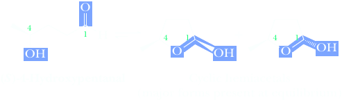Because of the original chiral center, the product hemiacetals in this example are diastereomers, not enantiomers, and are not necessarily produced in equal amounts.
Simple carbohydrates, all of which are polyhydroxyaldehydes or polyhydroxyketones, exist in solution predominantly as cyclic hemiacetals. Because carbohydrates have several hydroxyl groups, they could potentially form rings of different sizes. Generally, only five- and six-membered cyclic hemiacetals (the most strain-free types of rings) are produced to an appreciable extent. The new chiral center created in carbohydrate cyclic hemiacetals can have either an R or an S configuration. The carbon atom at the new chiral center of a carbohydrate cyclic hemiacetal is given the special name of anomeric carbon and corresponds to the carbonyl carbon atom in the open chain form. The two different cyclic hemiacetals are called anomers, and the configuration of each is designated as α or β depending on whether the hemiacetal -OH group is on the same side of the ring as the terminal −CH2OH substituent (β anomer) or on the opposite side (a anomer). Note that owing to the presence of multiple chiral centers, the anomers are diastereomers, not enantiomers.
D-Glucose, the most important carbohydrate in mammalian metabolism, exists as a six-membered cyclic hemiacetal form, as both α and β anomers.

At equilibrium, the β anomer of D-glucose predominates, because the -OH group of the anomeric carbon is in the more stable equatorial position of the more stable chair conformation. In α-D-glucose, the —OH group on the anomeric carbon is axial. When remembering the names of D-glucose anomers, some students find it helpful to remember the phrase “alpha is axial.”

Formation of hemiacetals is catalyzed by bases such as hydroxide or alkoxide. The function of the catalyst is to remove a proton from the alcohol, making it a better nucleophile.
Mechanism
Base-Catalyzed Formation of a Hemiacetal
Step 1: Take a proton away. Proton transfer from HOR to the base gives the alkoxide.
| B:− | + | H—OR | fast and reversible ⇌ | B—H | + | −OR |
Step 2: Make a new bond between a nucleophile and an electrophile. Attack of RO- on the carbonyl carbon gives a tetrahedral carbonyl addition compound.
Step 3: Add a proton. Proton transfer from the alcohol to the O− gives the hemiacetal and regenerates the base catalyst.
Formation of hemiacetals can also be catalyzed by acid, most commonly sulfuric acid, p-toluenesulfonic acid, or hydrogen chloride.
Mechanism Acid-Catalyzed Formation of a Hemiacetal
Step 1: Add a proton. Using a strong acid such as HCl or sulfuric acid sets up an equilibrium in which the protonated alcohol is preferred. The protonated alcohol is therefore the proton source for subsequent steps in the hemiacetal formation reaction.
| R—O—H | + | H—A | ⥂ | R—O+—H2 | + :A− |
| pKa -7 to -10 | pKa -2 to -3 |
Step 2: Add a proton. Proton transfer from the protonated alcohol to the carbonyl oxygen gives the conjugate acid of the aldehyde or ketone.
| 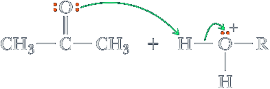 | fast and reversible ⇌ | (CH3)2C=0+H | + R—O—H |
In this way, the acid catalyst functions to protonate the carbonyl oxygen and thus renders the carbonyl carbon more electrophilic and more susceptible to attack by the weakly nucleophilic oxygen atom of the alcohol.
Step 3: Make a new bond between a nucleophile and an electrophile. Attack of ROH on the carbonyl carbon gives a tetrahedral carbonyl addition compound.
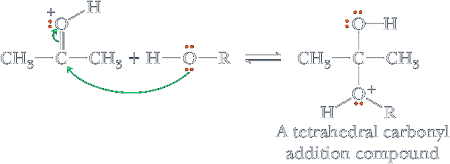Step 4: Take a proton away. Proton transfer from the oxonium ion to an alcohol molecule gives the hemiacetal and regenerates the acid catalyst.
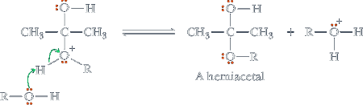Hemiacetals are often not stable relative to starting materials, but they react further with alcohols to form acetals plus a molecule of water. Acetals are considerably more stable than hemiacetals and can be isolated in good yield under the proper conditions.
The formation of acetals and its reverse is catalyzed by acids, not by bases, because the OH group cannot be displaced directly by nucleophiles.
The functional group of an acetal is a carbon bonded to two —OR groups.
The mechanism for the acid-catalyzed conversion of a hemiacetal to an acetal is divided into four steps. As you study this mechanism, note that acid is a true catalyst in this reaction. The protonated alcohol is used to add a proton in Step 1, but another protonated alcohol is generated in Step 4. The latter steps of this mechanism are very similar to those for hemiacetal formation.
Mechanism Acid-Catalyzed Formation of an Acetal
Step 1: Add a proton. Proton transfer from the protonated alcohol to the hemiacetal OH group gives an oxonium ion.

Step 2: Break a bond to give stable molecules or ions. Loss of water gives a new, resonance-stabilized cation.
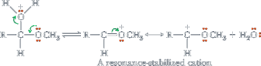Step 3: Make a new bond between a nucleophile and an electrophile. Reaction of the resonance-stabilized cation (an electrophile) with methanol (a nucleophile) gives the conjugate acid of the acetal.
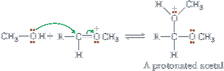Step 4: Take a proton away. Proton transfer from the protonated acetal to alcohol gives the acetal and generates a new molecule of the acid catalyst.
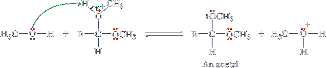Formation of acetals is often carried out using the alcohol as the solvent and dissolving either dry HCl (hydrogen chloride gas) or p-toluenesulfonic acid in the alcohol. Because the alcohol is both a reactant and solvent, it is present in large molar excess, which forces the equilibrium to the right and favors acetal formation. Note that this reaction is completely reversible. Addition of excess water to an acetal causes hydrolysis to the ketone.
| + | 2EtOH | H+ ⇌ | R-CH-(OEt)2 | + | H2O (Removal of water favors formation of the acetal) | |
| An excess of alcohol pushes the equilibrium toward formation of the acetal | A diethyl acetal |
In another experimental technique to force the equilibrium to the right, water is removed from the reaction vessel as an azeotrope by distillation using a Dean-Stark trap (Figure 16.1). In this method for preparing an acetal, the aldehyde or ketone, alcohol, acid catalyst, and benzene are brought to reflux. The component in this mixture with the lowest boiling point is an azeotrope, bp 69°C, consisting of 91% benzene and 9% water. This vapor is condensed and collected in a side trap where it separates into two layers. At room temperature, the composition of the upper, less dense layer is 99.94% benzene and 0.06% water. The composition of the lower, more dense layer is almost the reverse, 0.07% benzene and 99.93% water. As reflux continues, benzene from the top layer is returned to the refl uxing mixture, and water is drawn off at the bottom through a stopcock. A Dean-Stark trap “pumps” water out of the reaction mixture, thus forcing the equilibrium to the right. This same apparatus is used in many other reactions where water needs to be removed, such as formation of enamines (Section 19.4A).